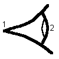

Oeil stylisé

Définition
Il est défini à la souris par les points 1
(rétine) et 2 (centre pupille). Toutes les parties de cet oeil
sont aborbantes.
L'oeil peut être ajouté:
- en cliquant sur le bouton de la barre d'outil ayant la forme
ci-dessus, puis en faisant un clic simple pour saisir le point 1, puis
en faisant un clic simple pour saisir le second (ne pas maintenir le
bouton de la souris enfoncé entre les deux points)
OU
- menu "Ajouter" puis "Divers" puis "Oeil stylisé".
Remarque: cet oeil est optiquement inactif, il ne sert pas à
représenter le cheminement des rayons jusqu'à la
rétine.
Options
On peut imposer
-l'épaisseur des traits du bord de l'oeil
- la couleur de l'oeil (c'est-y-pas mignon tout plein...)
Ces propriétés peuvent être rendues accessibles:
- à la construction de l'écran si on passe par le menu
"Ajouter"
- à tout instant en cliquant sur le bouton
"Propriétés" de la barre d'outil, puis en cliquant sur un
des cercles bleus qui apparaissent sur l'élément dont on
veut obtenir les propriétés; ne pas oublier à la
fin de cliquer sur le bouton "Fin prop." de la barre d'outil pour
quitter le mode propriétés.
Divers
Quand on est en mode déplacement, on peut:
- translater l'oeil en le prenant par la rétine
- changer son orientation et sa tailleen utilisant l'autre point
Retour à la page
d'accueil